About · the long version
oyabun
親分 (oyabun): the boss, the patriarch, the one everyone answers to. I picked it as a handle in the early 2000s, when I was a lanky kid with a dial-up modem and no intention of ever managing anybody. Nineteen years later I woke up as a CEO, then a CPO, and the joke had written itself. This is the story of un-becoming the oyabun.
Accidental oyabun
I studied computer science, started as a developer, and drifted into design because nobody else was drawing the flows. Then came the boss years. At Intexmedia I went from writing frontend to running the company, with portfolios that sat in Spain’s top ten for traffic and served audiences in the US and Latam. CPO at Delis.io, a smart shopping cart that turned recipes into grocery orders, and at Uvalent. Founder at Liqueed Studio. I built teams from zero, launched a product I am still proud of, failed to raise the money that would have kept it alive, and founded and sold companies, all from Extremadura, remote, years before remote was a perk.
On paper that is a founder story. Founder, CEO, CPO, exit, failed raise, repeat. Bla, bla, bla. Resume voice. The truth under it is simpler: I am a doer. A crafter. A product builder who kept getting promoted away from the exact thing he was good for. The handle said oyabun, the boss everyone answers to, and for a while I believed the handle.
An oyabun is also the person who must take the blame, so I learned that job too: one sold company, one failed raise, enough wreckage to fill LechazoConf’s whole format, which is literally un fracaso y un éxito, one failure and one success per talk.
Resigning as boss
So I made the weird move: I stepped down from product leadership, on purpose, and went back to being an individual contributor. Lead Product Designer at Rstor/Atrio, then Sysdig, Netdata, Metrist and, since 2023, Docker, where I am now a Staff Product Designer on the principal track, leading AI and agentic UX. Recruiters asked what went wrong. Nothing did. I went back because I missed the craft, and because the industry was about to hand designers the most powerful bench in its history.
The bet paid off. Back at the keys, I prototyped Docker’s first CLI design system in HTML and shipped Swift for a macOS sandbox app, things no VP of anything would have touched. In agentic products the gap between mockup and reality is exactly where the interesting problems live, and you can only find them with your hands in the code. Hanging up the oyabun coat was the best career decision I ever made.
Drawing talks
While I was busy being a boss, I kept a secret practice: I drew conferences. dibujandocharlas.com (drawing talks) is the banner for two decades of sketchnotes taken live at developer events, visual notes that mix words, arrows, monsters and containers to freeze a talk before it evaporates. TarugoConf calls it congelando charlas, and me el mítico sketchnoter, their official sketchnoter, which is a title nobody has to pay you for and everybody wants anyway.
Sketchnoting is the craft I never let rust. It is design research at 1x speed: listening for structure, deciding what to draw, drawing badly and quickly in front of strangers. In April 2020 Vogue España turned the practice into a productivity feature, interviewing me as the creator of Dibujando Charlas and publishing my sketchnotes, one of them frozen live at UXSpain. Vogue covering a Spanish techie’s Sharpie habit remains the most surreal press a hobby can get.
Beyond conferences I have drawn for companies and institutions, from Trivago and TEDx stages to PMI project-management workshops, and I did graphic recording for sessions of the UN World Food Programme, where diplomats and program directors watched a humanitarian agenda appear on paper in real time. LechazoConf still points at my live notes from their 2018 edition on their own site, and Webedia’s WATmag described the project as one of the most didactic around, someone who elevates conferences to the category of art while helping you remember them.
The strangest commission came in March 2021: I was the graphic artist for #SciDipNet2021, the final networking meeting of S4D4C, a Horizon 2020 project of the European Commission on science diplomacy, the whole science for diplomacy, diplomacy for science business. For five days, 765 diplomats, scientists and policymakers logged on, and my visual notes were published day by day in the project’s review. Drawing the bridges between science and foreign policy, literally, is about as on-the-nose a job title as a sketchnoter can ask for.
I also teach it. The workshops go back to 2015, when the PMI chapter in Valladolid hired me to teach project managers to think in pictures, followed by Madrid, Barcelona and three-hour online courses for professionals stuck at home during the pandemic. In December 2020 I taught a teenage reading club in Galicia to take visual notes over a video call from Madrid; their librarian wrote that not one of them lifted their head off the paper. The format came full circle at the TarugoConf community days, aprende a dibujar ideas, learn to draw ideas, for adults and kids. Kids are better at it than adults within ten minutes, every single time.
The best review did not come from a magazine. Fellow visual practitioner Vanesa Tejada wrote a public tribute after watching me draw every talk of a LechazoConf day, marker vest on, doing what she estimated were three hundred squats between panels. Peers do not write odes to each other lightly.
The receipts
Notes and photos from the stories above, pinned to the wall. Tilted, because flat is for screens.
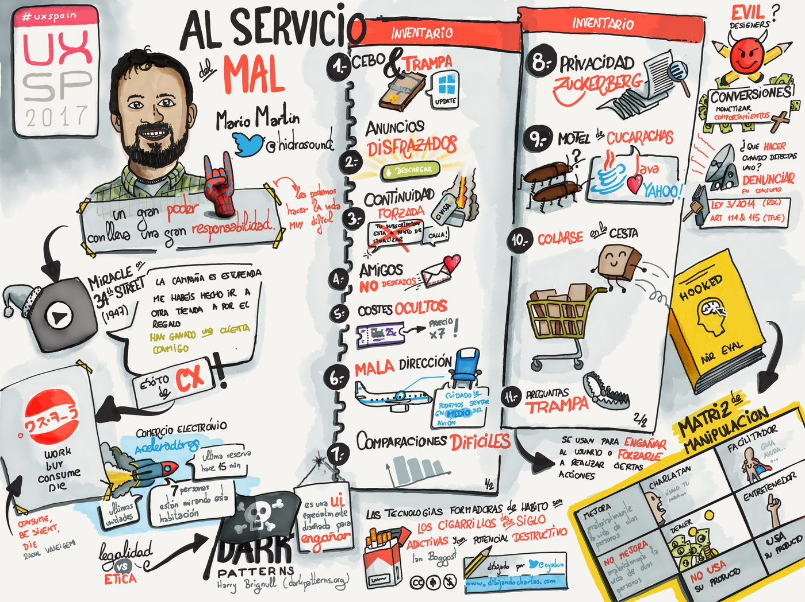
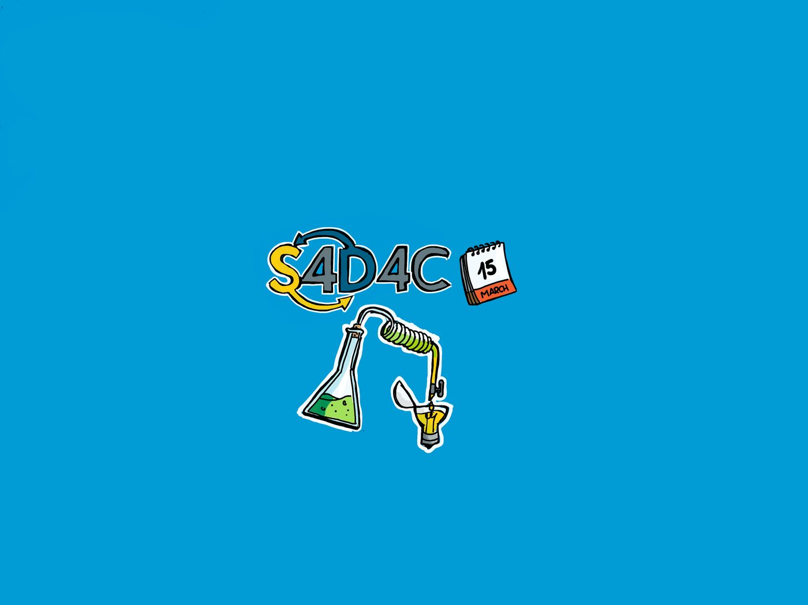
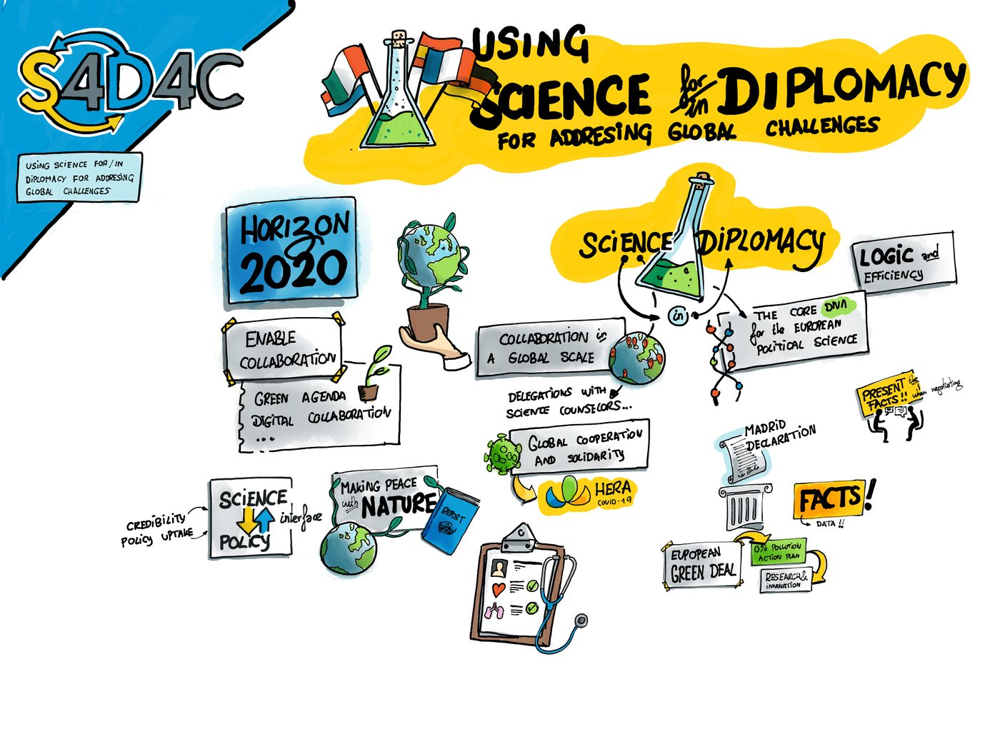
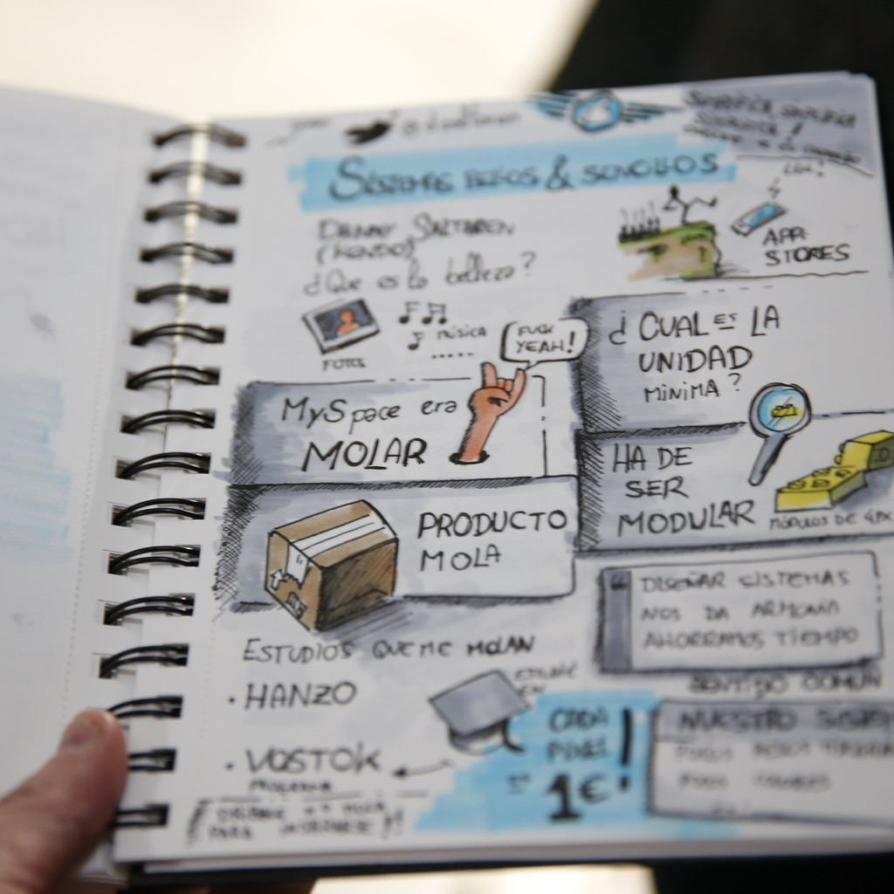
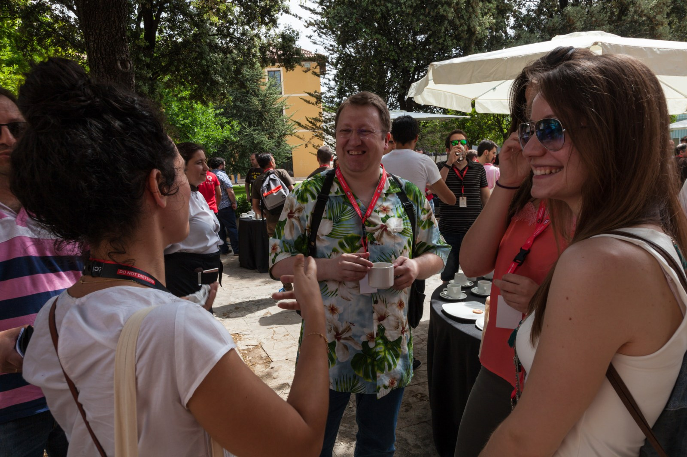
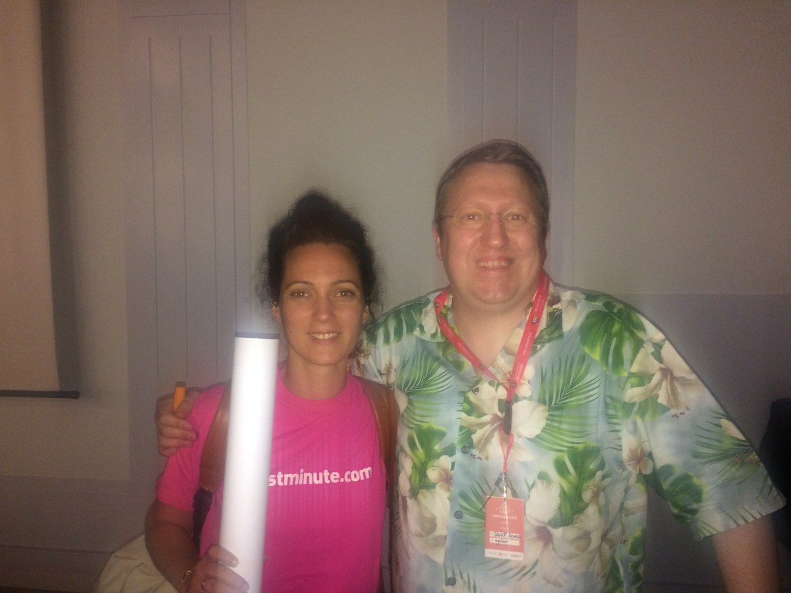
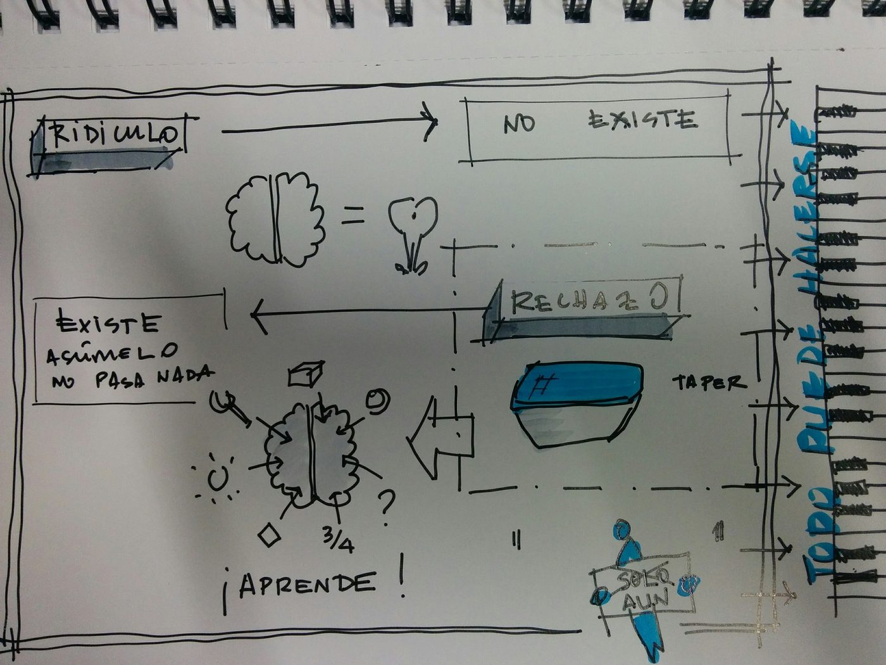
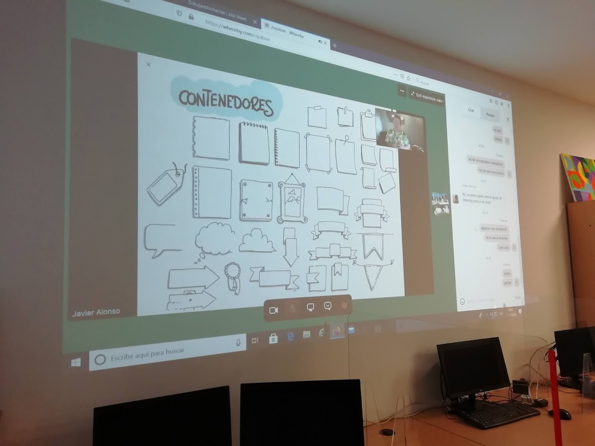
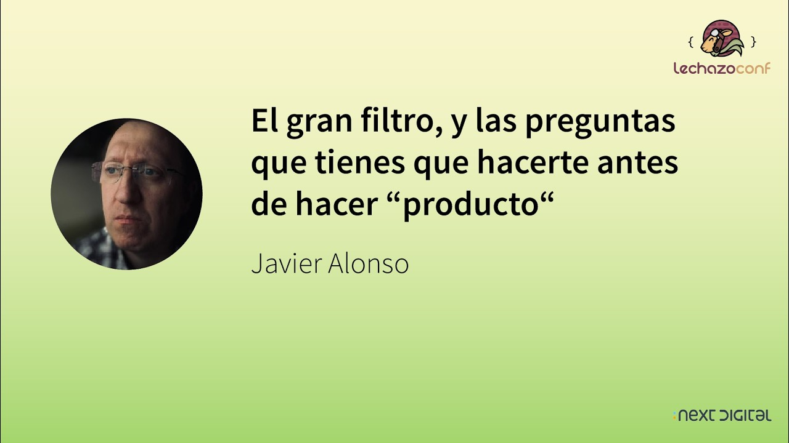
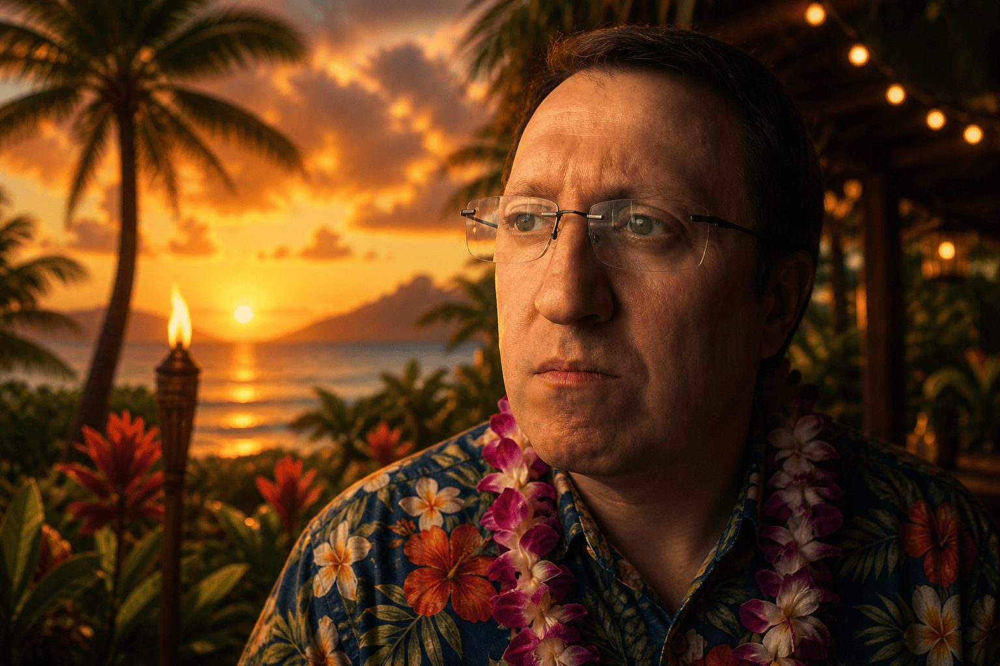
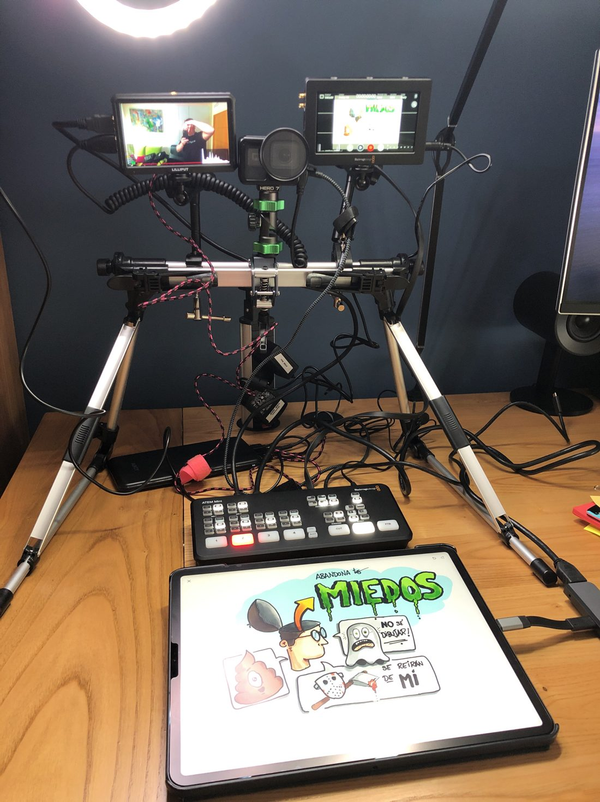
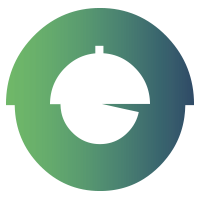
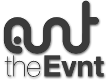
The community circuit
I have been part of the Spanish developer community since the days of MSN rooms and IRC. On X since July 2007, 42,000+ posts, plus Mastodon, because leaving a platform is just community tourism. Eight talks live on Speaker Deck, from Agile UX and low-tech product design to the Scrum war stories.
The events I care about are the small, stubborn, non-profit ones:
- TarugoConf, la conferencia tecnológica más gallega del mundo, the most Galician tech conference in the world. I am from Extremadura, which is roughly zero percent Galician, and it has never once come up. Official sketchnoter, workshop teacher, and a mecenas since 2022, because conferences survive on people who quietly pay.
- Extremadura Digital Day, my home region’s tech day. Speaking there in 2026 about being lazy but effective with AI and Docker Sandboxes, which is the honest version of an AI talk. There is no better venue than the one where half the audience went to school with you.
- LechazoConf, Valladolid, run by the Cylicon Valley association. One day, one track, one failure and one success per speaker, lechazo served at 13:45. It is the format I wish the big conferences had invented, and the perfect stage for someone with my particular resume. In 2026 I finally spoke there myself, “El gran filtro”, eight years after drawing every other talk that day.
And I did not just show up to them, I built them. I created theEvnt, a congress and training school that was more philosophy than venue, Madrid Emprende even ran a coffee break around it. And I co-founded Bellota Valley, the Extremaduran startup ecosystem that went from networking meetings in Cáceres to its own Startup School (#BVSS), because Silicon Valley had no monopoly on naming a valley after food. Plus meetups, call-for-papers and the awkward logistics behind free conferences that somehow keep happening outside Madrid and Barcelona. Tech in Spain is stronger because of these volunteer-run rooms, and I would rather be holding the gaffer tape than a keynote clicker on most weekends.
Where that leaves the work
Today the two halves feed each other. Sketchnoting trains the listening I use in research interviews and staff design interviews. Twenty years of community stages is why an AI agent’s handoff to a human can feel like a conversation instead of a form. And having once been the oyabun means I know what leadership wants from a designer, which is exactly why being not-a-manager is so much more fun.
The seal on the halftone skin of this site is 親, oya, the parent character of the handle. Keep it as a reminder: the title you give yourself ages faster than the craft you keep.
If you want the compressed version, it is on the resume. The work is here, the toys are in the playground, and drawing talks are at dibujandocharlas.com.